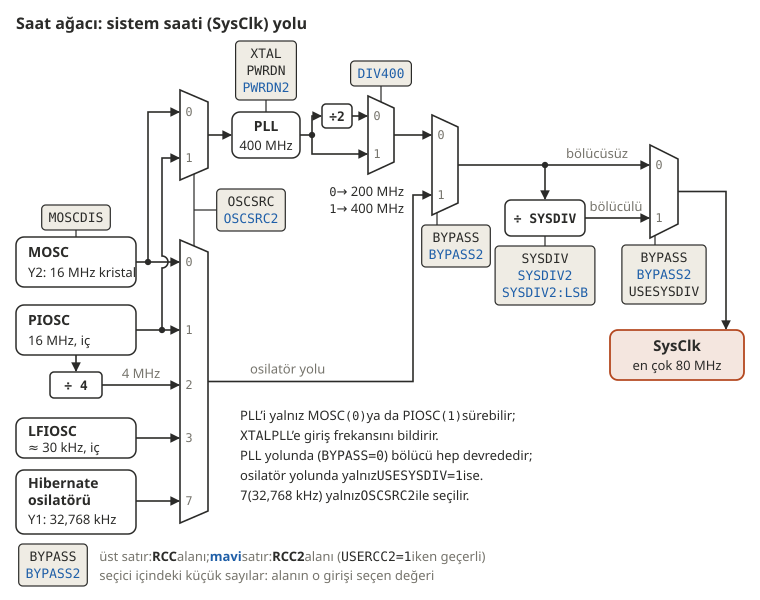
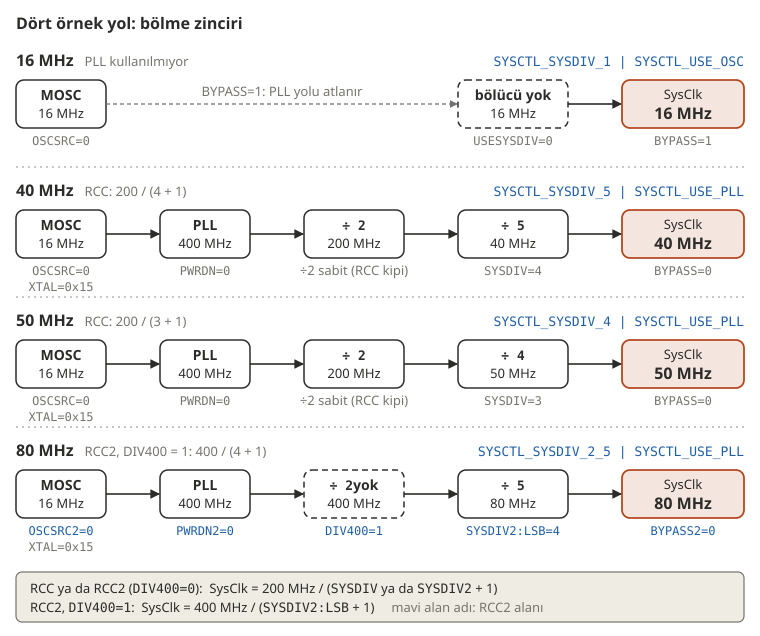
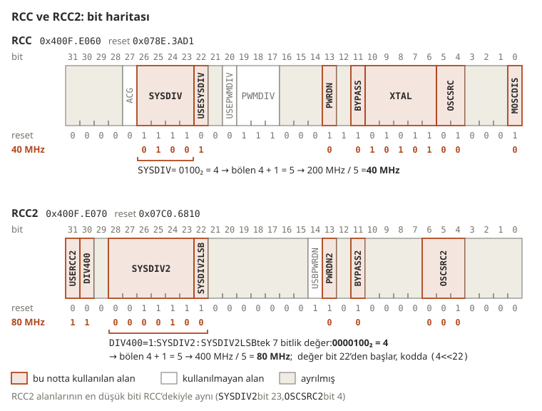
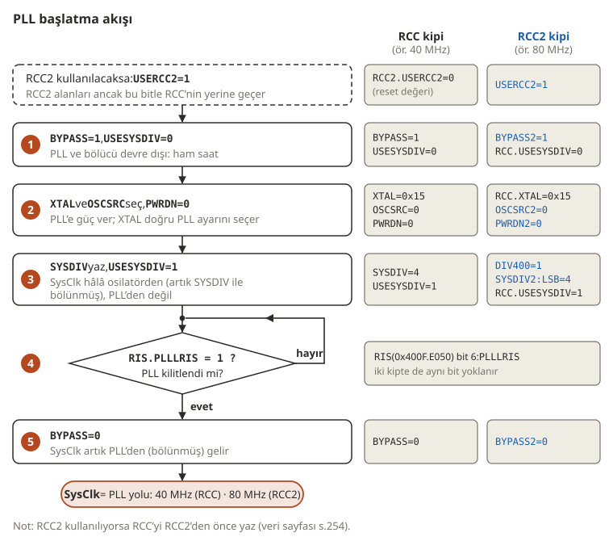
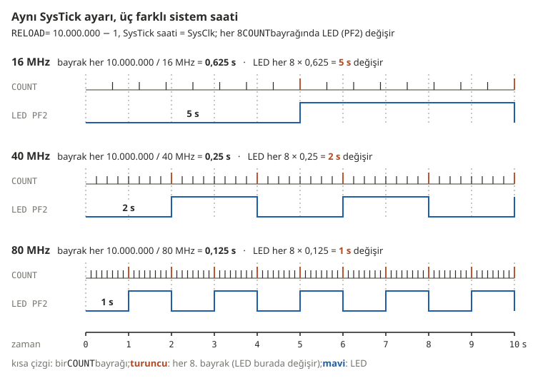

Sistem Saati ve PLL
Mikrodenetleyicide yapılan her şey bir saat darbesiyle ilerler: komutların yürütülmesi, zamanlayıcının sayması, UART'ın bit süresi, SysCtlDelay'in beklemesi. TM4C123GH6PM açıldığında içindeki 16 MHz'lik osilatörle çalışır. LaunchPad'deki 16 MHz kristal ve yonganın içindeki 400 MHz PLL ile bu saat 80 MHz'e kadar çıkarılabilir. Bu notta saatin nereden geldiğini, PLL'in nasıl ayarlandığını ve saat değişince programdaki hangi sayıların değişmesi gerektiğini göreceğiz. Daha önceki notlardaki SysCtlClockSet(SYSCTL_SYSDIV_5 | …) satırının ne yaptığı da burada açılıyor.
Bu notun sonunda öğrenci:
- Sistem saatinin (SysClk) hangi kaynaklardan gelebileceğini (PIOSC, PIOSC/4, MOSC, LFIOSC, Hibernate 32,768 kHz, PLL) sayabilir. Çevre birimi saat kapısını (RCGCxxx) sistem saatinin frekansından ayırabilir.
- Saat ağacını izleyerek 16 MHz kristalden PLL ile 40, 50, 66,67 ve 80 MHz'in nasıl elde edildiğini hesaplayabilir. 80 MHz için neden RCC2 ve DIV400 gerektiğini açıklayabilir.
- RCC ve RCC2 register'larının alanlarını (XTAL, OSCSRC, PWRDN, BYPASS, SYSDIV, USESYSDIV, MOSCDIS, USERCC2, DIV400, SYSDIV2, SYSDIV2LSB) tanıyabilir. Veri sayfasının 5 adımlı başlatma sırasını register düzeyinde uygulayabilir.
- Aynı ayarı TivaWare'deki
SysCtlClockSetile yapabilir, makroların hangi bitlere açıldığını gösterebilir,SysCtlClockGetile saati okuyabilir. - Saat değişince
SysCtlDelay, SysTick, zamanlayıcı ve UART ayarlarının nasıl etkilendiğini hesaplayabilir. Sabit "40000000" yerineSysCtlClockGet()kullanmanın nedenini açıklayabilir.
1. Sistem saati nedir
Amaç: "saat" sözcüğünün iki ayrı anlamını ayırmak: saatin frekansı ve bir birime saatin gidip gitmediği.
Sistem saati (SysClk), Cortex-M4F çekirdeğini, belleği ve çevre birimlerini süren ana saat işaretidir. Bir komutun kaç nanosaniye sürdüğü, zamanlayıcının bir sayımının ne kadar olduğu, UART'ın baud bölücüsünün hangi frekansı böldüğü hep bu saate bağlıdır. Veri sayfası çevre birimlerinin sistem saatiyle sürüldüğünü ve her birinin ayrı ayrı açılıp kapatılabildiğini söyler (§5.2.5.2, s. 221). TM4C123GH6PM'de sistem saati en çok 80 MHz olabilir (s. 230'daki LDO tablosu: 1,2 V'ta en yüksek sistem saati 80 MHz).
Saat kapısı ve sistem saati
GPIO notundan beri her programın başında SYSCTL_RCGCGPIO_R |= 0x20 gibi bir satır var. Bu satır sistem saatini değiştirmez, yalnız o saatin Port F'ye gidip gitmeyeceğini belirler. Bu yüzden RCGC register'larına saat kapısı (clock gating) denir. Kapı kapalıyken birimin register'larına erişilirse hata kesmesi (fault) oluşur (Workbook s. 3-14). Kapı açıldıktan sonra register'lara erişmeden önce 3 sistem saati beklenmelidir (§5.2.6, s. 227). Notlarda bu yüzden PRGPIO beklenir.
| Saat kapısı | Sistem saati | |
|---|---|---|
| Register | RCGCGPIO, RCGCTIMER, RCGCUART, RCGCADC… | RCC, RCC2 |
| Ne belirler | Saatin o birime gidip gitmediğini (açık/kapalı) | Saatin kaynağını ve frekansını (bütün yonga için) |
| TivaWare | SysCtlPeripheralEnable | SysCtlClockSet, SysCtlClockGet |
| Ne zaman | Her birimden önce bir kez | Programın başında, birimler ayarlanmadan önce |
Birkaç birimin kendine ait bir saat seçeneği vardır. Bunlar Bölüm 8'de ele alınıyor: ADC saati (PIOSC ya da PLL/25), UART ve SSI baud saati (sistem saati ya da PIOSC; offset 0xFC8'deki Clock Control register'ı, s. 222), PWM saati (RCC'deki PWMDIV ile bölünmüş sistem saati) ve USB'nin kendi 480 MHz PLL'i.
2. Saat kaynakları
Amaç: yongadaki saat kaynaklarını, doğruluklarını ve hangisinin PLL'i sürebildiğini tanımak.
| Kaynak | Frekans ve doğruluk | LaunchPad'de | PLL'i sürer mi? | SysClk olur mu? | OSCSRC / OSCSRC2 |
|---|---|---|---|---|---|
| PIOSC (precision internal oscillator) | 16 MHz. Fabrika kalibrasyonuyla gerilim ve sıcaklık aralığında ±%3, kullanıcının yeniden kalibrasyonuyla o koşulda ±%1 (Tablo 24-15, s. 1375) | Yonganın içinde | Evet (RCC'de OSCSRC = 0x1, RCC2'de OSCSRC2 = 0x1; Tablo 5-3, §5.2.5.5) | Evet | 0x1 (reset değeri) |
| PIOSC/4 | 4 MHz | İçeride | Hayır | Evet | 0x2 |
| MOSC (main oscillator) | Kristal ya da dış saat. PLL ile 5–25 MHz, PLL'siz 4–25 MHz (s. 219–220). Doğruluk kristale bağlıdır | Y2: 16 MHz kristal (SPMU296 §2.2.3, s. 12) | Evet | Evet | 0x0 |
| LFIOSC (low-frequency internal oscillator) | Yaklaşık 30 kHz. Veri sayfasına göre 10–90 kHz arası, tipik 33 kHz (Tablo 24-16, s. 1375). Workbook "30 kHz ± %50" verir | İçeride | Hayır | Evet | 0x3 |
| Hibernate osilatörü | 32,768 kHz | Y1: 32,768 kHz kristal (SPMU296 §2.2.2, s. 11) | Hayır | Evet | 0x7 (yalnız OSCSRC2) |
Tablo veri sayfasının Tablo 5-3'ünü (s. 220) ve Workbook'taki kaynak tablosunu (s. 3-4) birleştirir. Bunlara ek olarak sistem saati PLL çıkışından da gelebilir. PLL'in giriş frekansı 5–25 MHz olmalıdır (s. 220). Bu yüzden yalnız MOSC ve PIOSC PLL'i sürebilir. LFIOSC derin uyku (Deep-Sleep) için, Hibernate osilatörü gerçek zaman saati için düşünülmüştür. Bu ikisi 9. notun konusudur.
Yüksek doğruluk gereken işler için kristal kullanılır. PIOSC'nin ±%3 sapması bir LED için önemsizdir. Ama UART'ta alıcıyla verici arasındaki toplam baud farkı birkaç yüzdeyi geçince çerçeveler bozulur. Zamanlayıcıyla saat tutan bir programda %3, saatte yaklaşık 2 dakikalık kayma demektir.
Reset sonrası saat
Güç verildiğinde ya da reset sonrasında RCC = 0x078E.3AD1, RCC2 = 0x07C0.6810 olur (s. 254 ve 260). Bu değerlerin anlamı:
- OSCSRC = 0x1 ve BYPASS = 1: sistem saati PIOSC'den gelir, PLL atlanmıştır.
- USESYSDIV = 0: bölücü kullanılmaz. SYSDIV = 0xF olsa da etkisizdir.
- PWRDN = 1: PLL kapalıdır. MOSCDIS = 1: ana osilatör kapalıdır.
- XTAL = 0x0B, yani 6 MHz. LaunchPad'in 16 MHz kristali için bu alanın 0x15 yapılması gerekir.
- USERCC2 = 0: RCC2 alanları kullanılmaz.
Sonuç: hiç saat kodu yazılmamış bir program 16 MHz PIOSC ile, ±%3 doğrulukla çalışır. GPIO ve ADC notlarındaki API'siz örnekler bu varsayılanla çalışır.
3. Saat ağacı
Amaç: bir kaynaktan SysClk'e giden yolu ve yol üzerindeki her seçici ile bölücünün hangi register alanıyla denetlendiğini görmek.

Yolu soldan sağa izleyelim:
- Kaynak seçimi (OSCSRC): MOSC, PIOSC, PIOSC/4, LFIOSC ya da (RCC2'de) 32,768 kHz. PLL'in referansı bunlardan yalnız MOSC ya da PIOSC olabilir.
- PLL (PWRDN, XTAL): PWRDN = 0 iken PLL çalışır ve her zaman 400 MHz üretir. Giriş frekansını XTAL alanından öğrenir. XTAL'e göre çarpanları donanım kendisi seçer ve PLLFREQ0/1 register'larına koyar (§5.2.5.5, s. 225). 16 MHz kristalde 16 / (N + 1) × MINT = 16 / 2 × 50 = 400 MHz'tir (Tablo 24-14, s. 1374).
- Ön bölme (DIV400): DIV400 = 0 iken PLL çıkışı sabit olarak 2'ye bölünür (200 MHz). DIV400 = 1 iken 400 MHz doğrudan bölücüye gider. DIV400 yalnız RCC2'de vardır.
- BYPASS: 0 ise PLL yolu, 1 ise osilatörün ham çıkışı seçilir.
- SYSDIV ve USESYSDIV: seçilen saat SYSDIV + 1'e bölünür. USESYSDIV = 0 iken (ve BYPASS = 1 iken) bölücü atlanır. PLL seçiliyken bölücü her zaman kullanılır (RCC, USESYSDIV açıklaması, s. 255).
Şekil 5-5'in dipnotları her alanın hangi register'da olduğunu söyler:
| Yalnız RCC'de | RCC'de, USERCC2 = 1 iken RCC2'deki karşılığı geçerli | Yalnız RCC2'de |
|---|---|---|
| XTAL, MOSCDIS, USESYSDIV, USEPWMDIV, PWMDIV | OSCSRC → OSCSRC2, PWRDN → PWRDN2, BYPASS → BYPASS2, SYSDIV → SYSDIV2 | USERCC2, DIV400, SYSDIV2LSB, USBPWRDN |
Bu tablo iki şeyi açıklar: RCC2 kullanılsa bile kristal değeri (XTAL) ve MOSCDIS RCC'ye yazılır. RCC2 kullanılırken RCC'deki BYPASS'ı temizlemek ise hiçbir şey yapmaz (7.5'teki hata).
4. PLL ve frekans hesabı
Amaç: verilen bir alan değerinden frekansı, istenen frekanstan alan değerini bulmak.
Üç kip, üç formül
| Kip | Bölücü alanı | Sistem saati (BYPASS = 0) | Geçerli aralık |
|---|---|---|---|
| RCC (USERCC2 = 0) | SYSDIV, bit 26:23 (4 bit) | 200 MHz / (SYSDIV + 1) | SYSDIV = 0 ve 1 ayrılmış. En yüksek 66,67 MHz (SYSDIV = 2), reset değeri 0xF → 12,5 MHz (Tablo 5-4, s. 223) |
| RCC2, DIV400 = 0 | SYSDIV2, bit 28:23 (6 bit) | 200 MHz / (SYSDIV2 + 1) | SYSDIV2 = 0 ve 1 ayrılmış. En düşük /64 → 3,125 MHz (Tablo 5-5, s. 223–224) |
| RCC2, DIV400 = 1 | [SYSDIV2 : SYSDIV2LSB], bit 28:22 (7 bit) | 400 MHz / (değer + 1) | Değer 0–3 ayrılmış. En yüksek 80 MHz (değer 4), en düşük /128 → 3,125 MHz (Tablo 5-6, s. 224) |
BYPASS = 1 iken aynı bölücü osilatör frekansına uygulanır: f = fosc / (SYSDIV + 1), USESYSDIV = 0 ise f = fosc. DIV400 ve SYSDIV2LSB yalnız BYPASS2 = 0 iken geçerlidir (Tablo 5-6, dipnot a).
Neden 80 MHz için RCC yetmez? RCC kipinde 200 MHz tam sayılara bölünür: 200/2 = 100 MHz (ayrılmış, sınırın üstünde), 200/3 = 66,67 MHz. Arada 80 MHz yoktur. 80 MHz = 200 / 2,5'tir. 2,5'lik bölme ancak 400 MHz'i 5'e bölerek, yani DIV400 = 1 ile yapılır. TivaWare'in SYSCTL_SYSDIV_2_5 adı da buradan gelir.
Örnek frekanslar
| SysClk | Yol | Alanlar | Hesap | TivaWare |
|---|---|---|---|---|
| 16 MHz | MOSC, PLL atlanmış | BYPASS = 1, OSCSRC = 0, USESYSDIV = 0 | 16 MHz / 1 | SYSCTL_SYSDIV_1 | SYSCTL_USE_OSC |
| 16 MHz | PLL | RCC2, DIV400 = 1, değer 24 | 400 / 25 | SYSCTL_SYSDIV_12_5 |
| 40 MHz | PLL | RCC, SYSDIV = 4 | 400 / 2 / 5 | SYSCTL_SYSDIV_5 |
| 50 MHz | PLL | RCC, SYSDIV = 3 | 400 / 2 / 4 | SYSCTL_SYSDIV_4 |
| 66,67 MHz | PLL | RCC, SYSDIV = 2 | 400 / 2 / 3 | SYSCTL_SYSDIV_3 |
| 80 MHz | PLL | RCC2, DIV400 = 1, değer 4 (SYSDIV2 = 2, SYSDIV2LSB = 0) | 400 / 5 | SYSCTL_SYSDIV_2_5 |
Dersin notlarında ve TI Workbook'ta en sık 40 MHz (SYSDIV_5) ve 50 MHz (SYSDIV_4) kullanılır. Derste PWM örneklerinde SYSDIV_12_5 gibi değerler de kullanılır. Bu değer saati PLL üzerinden 16 MHz'e indirir. Bu durumda kaynak kristal olduğu için frekans PIOSC'ninkinden çok daha doğrudur.

4 << 22 mi, 4 << 23 mü?
Bölücü değeri register'a kaydırılarak yazılır ve kaydırma miktarı kipe göre değişir. Dersteki kodlarda görülen hataların çoğu buradan çıkar:
- RCC'de SYSDIV bit 23'ten başlar. SYSDIV = 4 için
4 << 23=0x0200.0000yazılır. - RCC2, DIV400 = 0 iken SYSDIV2 de bit 23'ten başlar. Bit 22 (SYSDIV2LSB) yok sayılır.
- RCC2, DIV400 = 1 iken 7 bitlik değer bit 22'den başlar. Değer 4 için
4 << 22=0x0100.0000yazılır.
4 << 22 = 0x0100.0000 yalnız bit 24'ü 1 yapar. Bit 22'den bakan DIV400 = 1 kipi bunu 4 olarak okur: 400/5 = 80 MHz. Bit 23'ten bakan RCC ve DIV400 = 0 kipi aynı biti 2 olarak okur: 200/3 = 66,67 MHz. Valvano'nun kitabındaki RCC2 kodunda görülen (4<<22) RCC'ye taşınınca 40 MHz değil 66,67 MHz verir. RCC'de SYSCTL_RCC_SYSDIV_S (= 23) kullanmak bu hatayı önler. TivaWare'de SYSCTL_SYSDIV_3 = 0x0140.0000 değeri de tam olarak USESYSDIV + (4 << 22)'dir.
5. RCC ve RCC2
Amaç: başlatmada kullanılan bitlerin yerini, maskesini ve reset değerini bir arada görmek.

Adresler ve maske adları inc/tm4c123gh6pm.h'dendir. Taban adres 0x400F.E000'dir: RIS +0x050, MISC +0x058, RCC +0x060, RCC2 +0x070, PLLSTAT +0x168.
RCC alanları (offset 0x060, reset 0x078E.3AD1)
| Bit | Alan | Maske | Reset | Anlamı |
|---|---|---|---|---|
| 26:23 | SYSDIV | SYSCTL_RCC_SYSDIV_M 0x0780.0000, kaydırma SYSCTL_RCC_SYSDIV_S = 23 | 0xF | Bölen = SYSDIV + 1 |
| 22 | USESYSDIV | SYSCTL_RCC_USESYSDIV 0x0040.0000 | 0 | 1: bölücü kullanılır. RCC2 etkinken SYSDIV2'nin kullanılması için de bu bit 1 olmalıdır (s. 261). PLL seçiliyken bölücü zorunludur |
| 20, 19:17 | USEPWMDIV, PWMDIV | SYSCTL_RCC_USEPWMDIV, SYSCTL_RCC_PWMDIV_M | 0, 0x7 | PWM saati bölücüsü (12. not) |
| 13 | PWRDN | SYSCTL_RCC_PWRDN 0x0000.2000 | 1 | 1: PLL kapalı. 0: PLL çalışır |
| 11 | BYPASS | SYSCTL_RCC_BYPASS 0x0000.0800 | 1 | 1: osilatör yolu, 0: PLL yolu |
| 10:6 | XTAL | SYSCTL_RCC_XTAL_M 0x0000.07C0; SYSCTL_RCC_XTAL_16MHZ = 0x540 | 0x0B (6 MHz) | MOSC'ye bağlı kristal. 16 MHz = 0x15. PLL ile 0x09–0x1A arası (s. 256) |
| 5:4 | OSCSRC | SYSCTL_RCC_OSCSRC_M 0x30; SYSCTL_RCC_OSCSRC_MAIN = 0 | 0x1 | 0 MOSC, 1 PIOSC, 2 PIOSC/4, 3 LFIOSC |
| 0 | MOSCDIS | SYSCTL_RCC_MOSCDIS 0x1 | 1 | 1: ana osilatör kapalı (s. 257) |
RCC2 alanları (offset 0x070, reset 0x07C0.6810)
| Bit | Alan | Maske | Reset | Anlamı |
|---|---|---|---|---|
| 31 | USERCC2 | SYSCTL_RCC2_USERCC2 0x8000.0000 | 0 | 1: RCC2 alanları RCC'dekileri geçersiz kılar. 0: RCC2 alanları yok sayılır (s. 260) |
| 30 | DIV400 | SYSCTL_RCC2_DIV400 0x4000.0000 | 0 | 0: 200 MHz'e uygula. 1: SYSDIV2LSB'yi ekleyip 400 MHz'e uygula |
| 28:23 | SYSDIV2 | SYSCTL_RCC2_SYSDIV2_M 0x1F80.0000, SYSCTL_RCC2_SYSDIV2_S = 23 | 0x0F | Bölen = SYSDIV2 + 1 |
| 22 | SYSDIV2LSB | SYSCTL_RCC2_SYSDIV2LSB 0x0040.0000 | 1 | DIV400 = 1 iken 7 bitlik değerin en düşük biti. Yalnız DIV400 = 1 iken yazılabilir (s. 261) |
| 14 | USBPWRDN | SYSCTL_RCC2_USBPWRDN 0x4000 | 1 | USB PLL'i kapalı |
| 13 | PWRDN2 | SYSCTL_RCC2_PWRDN2 0x2000 | 1 | PWRDN'in RCC2 karşılığı |
| 11 | BYPASS2 | SYSCTL_RCC2_BYPASS2 0x0800 | 1 | BYPASS'ın RCC2 karşılığı |
| 6:4 | OSCSRC2 | SYSCTL_RCC2_OSCSRC2_M 0x70 | 0x1 | OSCSRC'nin değerleri + 0x7: 32,768 kHz |
- Oku-değiştir-yaz: ayrılmış bitlerin değeri korunmalıdır (s. 254, 261).
SYSCTL_RCC2_R = …gibi tam atamalar ayrılmış bitleri ve dokunulmak istenmeyen alanları da değiştirir. Alan değiştirmek için(R & ~MASKE) | DEĞERkalıbı kullanılır. - Önce RCC, sonra RCC2: veri sayfası iki register'ın açıklamasında da RCC'nin RCC2'den önce yazılmasını ister (s. 254, 260). 7.1 ve 7.2'deki kodlar her adımda bu sırayı izler. TivaWare ise RCC2 kipinde 2. adımın yazmasında önce RCC2'yi yazar (
sysctl.csatır 2653–2657). - EEPROM: bir EEPROM işlemi sürerken saat ayarı değiştirilmemelidir (EEDONE.WORKING = 0 beklenir, s. 221).
- MOSCDIS: reset değeri 1'dir ve RCC açıklamasına göre ana osilatör bu durumda kapalıdır (s. 257). §5.2.5.1'e göre MOSC gerekiyorsa yazılım onu resetten sonra açmalı ve saat referansını değiştirmeden önce oturmasını beklemelidir (s. 219). TivaWare'in
SysCtlClockSet'iSYSCTL_MAIN_OSC_DISverilmedikçe MOSCDIS'i temizler ve RIS.MOSCPUPRIS ile osilatörün oturmasını bekler (sysctl.csatır 2574–2618). Kaynak PIOSC seçilmiş olsa bile MOSC böylece açılır. Bu notun kodları da MOSCDIS'i temizleyip bekler. Veri sayfasının s. 221'deki "Important" notu ise MOSC'ye geçerken MOSC yeniden seçilmeden önce MOSCDIS'in 1 yapılmasını (set) ister, aksi hâlde ara sıra tanımsız bir saat ayarı oluşabileceğini söyler. Bu not TivaWare'in yaptığıyla çelişir. Burada s. 219'daki cümle ve TivaWare'in sırası izlenmiştir.
RIS, MISC ve PLLSTAT
- RIS.PLLLRIS (bit 6,
SYSCTL_RIS_PLLLRIS= 0x40, s. 245): PLL'in kilitlenmesi için gereken süre (TREADY) dolunca 1 olur. Kendiliğinden sıfırlanmaz, MISC'teki PLLLMIS bitine 1 yazılarak temizlenir (W1C,SYSCTL_MISC_R = SYSCTL_MISC_PLLLMIS). - RIS.MOSCPUPRIS (bit 8, 0x100, s. 245): MOSC açıldıktan sonra beklenen frekansa ulaşınca 1 olur. Temizlemek için
SYSCTL_MISC_MOSCPUPMISyazılır. - PLLSTAT.LOCK (bit 0, s. 273): PLL'in şu anki durumudur. 1 ise PLL güç almış ve kilitli, 0 ise kapalı ya da kilitlenmemiştir. RIS'teki bayraktan farkı, eski bir kilitlenmeden kalmamasıdır.
TREADY, PLL açılırken 512 × (N + 1), XTAL değişince 128 × (N + 1) referans periyodudur (Tablo 24-13, s. 1374). 16 MHz kristalde N = 1 olduğundan açılış 1024 × 62,5 ns = 64 µs sürer.
6. Başlatma adımları
Amaç: PLL'li sistem saatine güvenli geçişin sırasını ve her adımın nedenini bilmek. Adım numaraları Şekil 4'te ve kod yorumlarında aynıdır. 7.1'de ön adım ile 1. adımın RCC2 kısmı (BYPASS2 = 1) tek yazmada yapılır.
5 adım
Veri sayfası §5.3 (s. 231) PLL'i doğrudan register yazmalarıyla ayarlamak için beş adım verir. RCC2 kullanılacaksa önce USERCC2 = 1 yapılır ve adımlar RCC2'deki karşılık alanlarla uygulanır. Bu notta bu işe ön adım denir ve numara verilmez.
- PLL'i ve bölücüyü atla: RCC'de BYPASS = 1, USESYSDIV = 0 (RCC2'de BYPASS2 = 1). Mikrodenetleyici "ham" osilatörle çalışmaya devam eder. Yeni PLL ayarı, sistem saati PLL'e bağlanmadan önce oturabilir.
- Kaynağı seç, PLL'e güç ver: XTAL'i (kristal değeri) ve OSCSRC'yi (OSCSRC2) yaz, PWRDN'i (PWRDN2) temizle. XTAL yazıldığında donanım bu kristale uygun PLL ayarlarını kendisi yükler.
- Bölücüyü seç: SYSDIV'i (SYSDIV2, DIV400 ve SYSDIV2LSB) yaz ve RCC'de USESYSDIV = 1 yap. Sistem saatinin frekansını bu değer belirler.
- Kilidi bekle: RIS'teki PLLLRIS 1 olana kadar yokla.
- PLL'i kullan: BYPASS'ı (BYPASS2) temizle. Sistem saati artık PLL'den gelir.

Neden bu sıra? PLL'in ayarı (XTAL, kaynak, güç) değişirken çıkışı kararsızdır (§5.2.5.8, s. 226). İşlemci o sırada PLL'den besleniyorsa saati bozulur. 1. adım işlemciyi kararlı bir osilatöre alır. 4. adım PLL'in yeniden oturmasını bekler. 5. adım ancak bundan sonra geçişi yapar. Veri sayfası ayrıca bir donanım koruması da tarif eder. Yazılım PLL'e tek adımda geçse bile donanım, TREADY dolana kadar sistemi seçili osilatörle saatlemeye devam eder (s. 226). Bu koruma 4. adımı gereksiz kılmaz: yazılım, saatin gerçekten PLL'e geçtiğini ancak kilit bayrağına bakarak bilir.
Veri sayfasının adımlarında olmayan iki ayrıntı vardır. Kodlarımızda ikisi de 2. adımın içindedir:
- MOSC'yi açmak: MOSCDIS = 1 ise önce temizlenir ve RIS.MOSCPUPRIS beklenir (TivaWare de böyle yapar).
- Eski kilit bayrağı: PLLLRIS bir önceki kilitlenmeden 1 kalmış olabilir. TivaWare bayrağı 2. adımda temizler ve 4. adımda PLLSTAT.LOCK'a bakar. Bizim kodlarımız veri sayfasındaki gibi PLLLRIS'e bakar ve bayrağı temizlemez. Böylece fonksiyon PLL zaten kilitliyken çağrılsa da 4. adımda takılmaz. XTAL aynı değerle yeniden yazıldığında PLL yeniden kilitlenmez (s. 226).
Ders kodundaki 0–8 numaraları
Dersteki saatayar2() ve saatayar() fonksiyonları (7.5) adımları 0'dan 8'e kadar numaralar. Bu numaraların veri sayfasının beş adımına karşılığı:
| Ders kodu yorumu | Yaptığı | Veri sayfası adımı |
|---|---|---|
| 0) | USERCC2 = 1 (saatayar'da 0) | Ön adım |
| 1) | BYPASS2 = 1 (saatayar'da BYPASS) | 1 |
| 2) 3) 4) | XTAL = 16 MHz; OSCSRC2 = 0; PWRDN2 = 0 | 2 |
| 5) 6) | DIV400; SYSDIV2 (ve saatayar'da USESYSDIV = 1) | 3 |
| 7) | PLLLRIS bekle | 4 |
| 8) | BYPASS2 = 0 | 5 |
Ders kodunda 1. adımdaki "USESYSDIV = 0" ve saatayar2'de 3. adımdaki "USESYSDIV = 1" yoktur. USESYSDIV reset değerinde zaten 0'dır. PLL seçiliyken bölücü her durumda kullanıldığı için saatayar2'nin sonucu değişmez. TivaWare'in SysCtlClockGet kodundaki bir yorum da bu biti PLL kullanılırken her zaman 1 sayar (sysctl.c satır 2868–2872).
7. Örnekler
Amaç: aynı başlatma sırasını register düzeyinde ve TivaWare ile uygulamak, sonucu LED ile gözlemek.
7.1 API'siz 80 MHz (RCC2, DIV400) API'siz
Fonksiyon Şekil 4'ün sırasını izler. Bütün yazmalar oku-değiştir-yaz biçimindedir. main mavi LED'i SysTick'in COUNT bayrağıyla yakıp söndürür. SysTick ayrıntıları 5. notta anlatılıyor, burada yalnız bayrak yoklanıyor.
#include <stdint.h>
#include "inc/tm4c123gh6pm.h"
// 16 MHz kristal (MOSC) + PLL ile sistem saatini 80 MHz yapar.
// RCC2 kullanılır: DIV400 = 1, 7 bitlik bölücü değeri 4 → 400 MHz / 5 = 80 MHz.
void saat_80mhz(void)
{
// Her adımda RCC, RCC2'den önce yazılır (veri sayfası s. 254, 260).
// 1) RCC kısmı: PLL'i ve sistem bölücüsünü atla (BYPASS = 1, USESYSDIV = 0).
SYSCTL_RCC_R = (SYSCTL_RCC_R | SYSCTL_RCC_BYPASS) & ~SYSCTL_RCC_USESYSDIV;
// Ön adım + 1) RCC2 kısmı, tek yazma: USERCC2 = 1, BYPASS2 = 1.
// RCC2'ye geçildiği anda PLL atlanmış olur.
SYSCTL_RCC2_R |= SYSCTL_RCC2_USERCC2 | SYSCTL_RCC2_BYPASS2;
// 2) Kaynağı ve kristali seç, PLL'e güç ver.
// MOSC açılışta kapalıdır (MOSCDIS = 1): kapalıysa aç ve kararlı olmasını bekle.
if (SYSCTL_RCC_R & SYSCTL_RCC_MOSCDIS) {
SYSCTL_MISC_R = SYSCTL_MISC_MOSCPUPMIS; // eski bayrağı temizle (W1C)
SYSCTL_RCC_R &= ~SYSCTL_RCC_MOSCDIS; // MOSC açık
while ((SYSCTL_RIS_R & SYSCTL_RIS_MOSCPUPRIS) == 0) { }
}
SYSCTL_RCC_R = (SYSCTL_RCC_R & ~SYSCTL_RCC_XTAL_M)
| SYSCTL_RCC_XTAL_16MHZ; // XTAL = 0x15 (16 MHz)
SYSCTL_RCC2_R &= ~SYSCTL_RCC2_OSCSRC2_M; // OSCSRC2 = 0: MOSC
SYSCTL_RCC2_R &= ~SYSCTL_RCC2_PWRDN2; // PWRDN2 = 0: PLL çalışır
// 3) Bölücüyü seç: RCC'de USESYSDIV = 1; RCC2'de önce DIV400 = 1, sonra bit 22'den
// başlayan 7 bitlik [SYSDIV2:SYSDIV2LSB] alanına 4 (bölen 4 + 1 = 5).
SYSCTL_RCC_R |= SYSCTL_RCC_USESYSDIV;
SYSCTL_RCC2_R |= SYSCTL_RCC2_DIV400;
SYSCTL_RCC2_R = (SYSCTL_RCC2_R & ~(SYSCTL_RCC2_SYSDIV2_M | SYSCTL_RCC2_SYSDIV2LSB))
| (4u << 22);
// 4) PLL'in kilitlenmesini bekle: RIS.PLLLRIS (bit 6). Parantezler şart.
while ((SYSCTL_RIS_R & SYSCTL_RIS_PLLLRIS) == 0) { }
// 5) PLL'i kullan: BYPASS2 = 0. Sistem saati artık 80 MHz.
SYSCTL_RCC2_R &= ~SYSCTL_RCC2_BYPASS2;
}
int main(void)
{
uint32_t sayac = 0;
saat_80mhz();
SYSCTL_RCGCGPIO_R |= 0x20; // Port F saati
while ((SYSCTL_PRGPIO_R & 0x20) == 0) { } // port hazır olsun
GPIO_PORTF_DIR_R |= 0x04; // PF2 (mavi LED) çıkış
GPIO_PORTF_DEN_R |= 0x04;
// SysTick: sistem saatiyle say, 8 000 000 çevrimde bir COUNT bayrağı.
NVIC_ST_CTRL_R = 0;
NVIC_ST_RELOAD_R = 8000000 - 1; // 80 MHz'te 0,1 s
NVIC_ST_CURRENT_R = 0;
NVIC_ST_CTRL_R = NVIC_ST_CTRL_CLK_SRC | NVIC_ST_CTRL_ENABLE;
while (1) {
if (NVIC_ST_CTRL_R & NVIC_ST_CTRL_COUNT) { // okuma bayrağı temizler
if (++sayac == 5) { // 5 x 0,1 s = 0,5 s
sayac = 0;
GPIO_PORTF_DATA_R ^= 0x04; // LED periyodu 1 s
}
}
}
}- Yazma sırası: her adımda önce RCC, sonra RCC2 yazılır (Bölüm 5'teki kural). Bu yüzden 1. adımın RCC kısmı (BYPASS = 1, USESYSDIV = 0) ön adımdan önce gelir.
- Ön adım + 1. adım (tek yazma): USERCC2 ile birlikte BYPASS2 de 1 yapılır. Önceki bir ayar RCC2'de BYPASS2 = 0 bırakmış olsa bile RCC2'ye geçilen anda PLL atlanmış olur.
- 2. adım: XTAL RCC'ye, OSCSRC2 ve PWRDN2 RCC2'ye yazılır (Bölüm 3'teki tablo). MOSC kapalıysa önce açılır ve MOSCPUPRIS beklenir.
ifsayesinde fonksiyon MOSC zaten açıkken çağrıldığında, hiç gelmeyecek bir bayrağı beklemez. - 3. adım: USESYSDIV (RCC) önce, DIV400 ve bölücü (RCC2) sonra yazılır. DIV400 bölücüden önce 1 yapılır, çünkü SYSDIV2LSB ancak DIV400 = 1 iken yazılabilir (s. 261). USESYSDIV = 1 olunca, BYPASS2 = 1 olduğu için sistem saati MOSC'nin bölünmüşü olur: önce reset değerindeki SYSDIV2 = 0xF ile 16/16 = 1 MHz, bölücü yazılınca 5. adıma kadar 16/3 ≈ 5,33 MHz. DIV400 ve SYSDIV2LSB, BYPASS2 = 1 iken geçersizdir, bölücü bu yüzden yalnız SYSDIV2 + 1 = 3 olarak çalışır. Bu ara değerler zararsızdır.
- SysTick: RELOAD = 8 000 000 − 1 → 80 MHz'te 0,1 s. LED 5 bayrakta bir değişir: değişme aralığı 0,5 s, periyot 1 s. Saat 80 MHz olmasaydı periyot da 1 s olmazdı. Bu yüzden LED'in periyodu basit bir saat ölçüsüdür (7.4).
7.2 API'siz 40 MHz (yalnız RCC) API'siz
RCC2 kullanılmadığı için ön adım yoktur. Bunun yerine 1. adımda RCC2 devreden çıkarılır.
#include <stdint.h>
#include "inc/tm4c123gh6pm.h"
// 16 MHz kristal (MOSC) + PLL ile sistem saatini 40 MHz yapar. Yalnız RCC kullanılır:
// PLL 400 MHz → sabit /2 → SYSDIV + 1 = 5 → 40 MHz.
void saat_40mhz(void)
{
// 1) PLL'i ve bölücüyü atla (BYPASS = 1, USESYSDIV = 0), sonra RCC2'yi
// devreden çıkar (USERCC2 = 0). Sıra önemli: RCC2 bırakıldığında RCC'nin
// BYPASS'ı zaten 1'dir.
SYSCTL_RCC_R = (SYSCTL_RCC_R | SYSCTL_RCC_BYPASS) & ~SYSCTL_RCC_USESYSDIV;
SYSCTL_RCC2_R &= ~SYSCTL_RCC2_USERCC2;
// 2) MOSC'yi aç (gerekirse), XTAL = 16 MHz, OSCSRC = MOSC, PWRDN = 0.
if (SYSCTL_RCC_R & SYSCTL_RCC_MOSCDIS) {
SYSCTL_MISC_R = SYSCTL_MISC_MOSCPUPMIS;
SYSCTL_RCC_R &= ~SYSCTL_RCC_MOSCDIS;
while ((SYSCTL_RIS_R & SYSCTL_RIS_MOSCPUPRIS) == 0) { }
}
SYSCTL_RCC_R = (SYSCTL_RCC_R & ~(SYSCTL_RCC_XTAL_M | SYSCTL_RCC_OSCSRC_M))
| SYSCTL_RCC_XTAL_16MHZ | SYSCTL_RCC_OSCSRC_MAIN;
SYSCTL_RCC_R &= ~SYSCTL_RCC_PWRDN;
// 3) SYSDIV = 4 ve USESYSDIV = 1. SYSDIV alanı bit 23'ten başlar:
// 4 << 23 = 0x02000000 (4 << 22 yazılırsa SYSDIV = 2 olur!).
SYSCTL_RCC_R = (SYSCTL_RCC_R & ~SYSCTL_RCC_SYSDIV_M)
| (4u << SYSCTL_RCC_SYSDIV_S) | SYSCTL_RCC_USESYSDIV;
// 4) PLL kilidini bekle.
while ((SYSCTL_RIS_R & SYSCTL_RIS_PLLLRIS) == 0) { }
// 5) BYPASS = 0: sistem saati PLL'den, 40 MHz.
SYSCTL_RCC_R &= ~SYSCTL_RCC_BYPASS;
}- USERCC2'yi temizleme sırası: önce RCC'de BYPASS = 1 yapılır, sonra USERCC2 = 0. Ters sırada, önceden RCC2 ile PLL'e geçilmişse RCC2 bırakıldığı anda RCC'nin eski alanları (belki BYPASS = 0) geçerli olurdu.
- 3. adım:
4u << SYSCTL_RCC_SYSDIV_S=0x0200.0000. Bölüm 4'teki tuzağa düşmemek için kaydırma miktarı başlık dosyasındaki adla yazılır. - 7.1'deki
main'desaat_80mhz()yerinesaat_40mhz()çağrılırsa RELOAD değişmediği için bayrak aralığı 0,2 s, LED periyodu 2 s olur.
7.3 TivaWare ile: SysCtlClockSet ve SysCtlClockGet API'li
SysCtlClockSet beş adımın hepsini tek çağrıda yapar. Parametre, her gruptan bir değerin OR'lanmasıyla kurulur: bölücü (SYSCTL_SYSDIV_…), PLL kullanımı (SYSCTL_USE_PLL / SYSCTL_USE_OSC), kaynak (SYSCTL_OSC_MAIN / SYSCTL_OSC_INT…) ve kristal (SYSCTL_XTAL_16MHZ).
#include <stdint.h>
#include <stdbool.h>
#include "inc/hw_memmap.h"
#include "driverlib/sysctl.h"
#include "driverlib/gpio.h"
// Saat seçimi: 80, 50, 40 ya da 16 (MHz). Değiştirip yeniden derleyin.
#define SAAT_MHZ 80
int main(void)
{
uint32_t saat;
#if SAAT_MHZ == 80 // RCC2, DIV400 = 1: 400 / 5
SysCtlClockSet(SYSCTL_SYSDIV_2_5 | SYSCTL_USE_PLL | SYSCTL_OSC_MAIN | SYSCTL_XTAL_16MHZ);
#elif SAAT_MHZ == 50 // RCC: 200 / 4
SysCtlClockSet(SYSCTL_SYSDIV_4 | SYSCTL_USE_PLL | SYSCTL_OSC_MAIN | SYSCTL_XTAL_16MHZ);
#elif SAAT_MHZ == 40 // RCC: 200 / 5
SysCtlClockSet(SYSCTL_SYSDIV_5 | SYSCTL_USE_PLL | SYSCTL_OSC_MAIN | SYSCTL_XTAL_16MHZ);
#else // PLL kapalı, doğrudan 16 MHz kristal
SysCtlClockSet(SYSCTL_SYSDIV_1 | SYSCTL_USE_OSC | SYSCTL_OSC_MAIN | SYSCTL_XTAL_16MHZ);
#endif
saat = SysCtlClockGet(); // RCC/RCC2 ve PLLFREQ'ten hesaplanır
SysCtlPeripheralEnable(SYSCTL_PERIPH_GPIOF);
while (!SysCtlPeripheralReady(SYSCTL_PERIPH_GPIOF)) { }
GPIOPinTypeGPIOOutput(GPIO_PORTF_BASE, GPIO_PIN_3); // yeşil LED
while (1) {
// SysCtlDelay döngüsü 3 çevrimdir: saat / 3 ≈ 1 s, saat / 6 ≈ 0,5 s.
// Bekleme saatten hesaplandığı için LED her seçimde ~1 s periyotla yanar.
GPIOPinWrite(GPIO_PORTF_BASE, GPIO_PIN_3, GPIO_PIN_3);
SysCtlDelay(saat / 6);
GPIOPinWrite(GPIO_PORTF_BASE, GPIO_PIN_3, 0);
SysCtlDelay(saat / 6);
}
}Bekleme SysCtlClockGet()'ten hesaplandığı için LED dört seçimde de yaklaşık 1 s periyotla yanıp söner. Bu, Bölüm 8'deki "sabit sayı yazma" kuralının küçük bir örneğidir. 16 MHz seçeneğinde SYSCTL_OSC_MAIN yerine SYSCTL_OSC_INT yazılırsa saat yine 16 MHz olur, ama kristalden değil ±%3'lük PIOSC'den gelir.
Makrolar hangi bitlere açılır?
Değerler driverlib/sysctl.h'dendir. Makrolar doğrudan RCC/RCC2 bit konumlarına göre seçilmiştir:
| Makro | Değer | Açılımı |
|---|---|---|
SYSCTL_SYSDIV_1 | 0x0780.0000 | USESYSDIV = 0: bölücü yok |
SYSCTL_SYSDIV_4 | 0x01C0.0000 | SYSDIV = 3 (bit 26:23), USESYSDIV = 1 → 200/4 = 50 MHz |
SYSCTL_SYSDIV_5 | 0x0240.0000 | SYSDIV = 4, USESYSDIV = 1 → 200/5 = 40 MHz |
SYSCTL_SYSDIV_2_5 | 0xC100.0000 | USERCC2 (bit 31) + DIV400 (bit 30) + 7 bitlik değer 4 (bit 28:22) → 400/5 = 80 MHz |
SYSCTL_SYSDIV_12_5 | 0xC600.0000 | USERCC2 + DIV400 + değer 24 → 400/25 = 16 MHz |
SYSCTL_USE_PLL | 0x0000.0000 | BYPASS = 0, PWRDN = 0 |
SYSCTL_USE_OSC | 0x0000.3800 | BYPASS = 1 (0x800), PWRDN = 1 (0x2000) ve bit 12 (ayrılmış, salt okunur, reset değeri 1; s. 256) |
SYSCTL_XTAL_16MHZ | 0x0000.0540 | XTAL = 0x15 |
SYSCTL_OSC_MAIN / SYSCTL_OSC_INT | 0x00 / 0x10 | OSCSRC = 0 (MOSC) / 1 (PIOSC) |
Workbook'un Lab 3'teki "/2 ve /5, toplam 10" açıklaması bu tablodan okunur. SYSDIV_5 RCC kipindedir, PLL'in 400 MHz'i önce sabit /2'den, sonra /5'ten geçer: 400 / 10 = 40 MHz.
SysCtlClockSet içeride ne yapar?
TivaWare 2.1.4 driverlib/sysctl.c, satır 2548–2718. Adım numaraları Şekil 4'e göredir:
- Adım 1 (satır 2561–2569): RCC'de BYPASS = 1, USESYSDIV = 0, RCC2'de BYPASS2 = 1 yazılır.
- MOSC (satır 2574–2618): MOSCDIS = 1 ise ve
SYSCTL_MAIN_OSC_DISverilmemişse (kaynak PIOSC olsa bile) MOSCDIS temizlenir, MOSCPUPRIS en çok 524 288 tur beklenir. Süre dolarsa fonksiyon döner. Ama 1. adım yazılmış olduğu için saat ayarı yarım kalır: PLL atlanmış, bölücü kapalıdır. - Adım 2: XTAL ve OSCSRC (RCC), USERCC2 ve OSCSRC2 (RCC2) yazılır. Sonra PWRDN/PWRDN2 ayarlanır ve MISC'e PLLLMIS yazılarak eski kilit bayrağı temizlenir (satır 2648).
- Adım 3 hazırlanır ama henüz yazılmaz: SYSDIV, USESYSDIV, MOSCDIS, SYSDIV2. DIV400'lü değerlerde USESYSDIV = 1, DIV400 ve SYSDIV2LSB eklenir.
- Adım 4 (satır 2693–2699): PLL kullanılacaksa PLLSTAT.LOCK en çok 32 768 tur yoklanır.
- Adım 5 ve son yazma: BYPASS ve BYPASS2 temizlenir. RCC ve RCC2 bölücüyle birlikte tek seferde yazılır. Bölücünün oturması için
SysCtlDelay(16)çağrılır (satır 2717).
Bizim kodumuzdan iki farkı vardır. TivaWare kilidi RIS yerine PLLSTAT'tan ve zaman aşımıyla bekler. Bölücüyü de BYPASS'ı temizleyen son yazmalarla birlikte değiştirir. Bu yazmalar yine iki tanedir (satır 2711 RCC, 2712 RCC2). RCC2 kipinde ilk yazmada USESYSDIV = 1 olur, BYPASS2 ise henüz 1'dir. İki yazma arasında saat bir an osilatör / (eski SYSDIV2 + 1) olur.
SysCtlClockGet (satır 2743–2959) bir değişkenden değil, register'lardan hesap yapar. OSCSRC'ye göre giriş frekansını bulur (MOSC için XTAL tablosundan). PLL kullanılıyorsa PLLFREQ0/1'deki çarpanlarla 200 MHz'i hesaplar, sonra RCC ya da RCC2'deki bölücüyü uygular. Sonuç en çok 80 MHz ile sınırlanır. Fonksiyonun açıklaması (satır 2729–2733), SysCtlClockSet çağrılmamışsa ya da kristal desteklenen frekanslardan biri değilse doğru sonuç vermeyebileceğini söyler. Ama kod yalnız RCC, RCC2, PLLFREQ0/1 ve DC1'i okur. Bu yüzden 7.1'deki gibi doğru yapılmış bir register ayarından sonra da doğru değeri hesaplar.
7.4 Saati doğrulama API'li
Saatin gerçekten ayarlandığı frekansta olup olmadığı, süresi saate bağlı bir olayın ölçülmesiyle anlaşılır. Aşağıdaki program iki LED'i iki ayrı yöntemle sabit sayılarla yakıp söndürür. Saat değişince ikisinin de hızı değişir.
#include <stdint.h>
#include <stdbool.h>
#include "inc/hw_memmap.h"
#include "inc/tm4c123gh6pm.h"
#include "driverlib/sysctl.h"
#include "driverlib/gpio.h"
// Sabit sayılarla zamanlama: saat değişince süreler değişir.
// Mavi LED (PF2): SysTick, RELOAD = 10 000 000 - 1, 8 bayrakta bir değişir.
// Kırmızı LED (PF1): SysCtlDelay(2000000) ile, her beklemede bir değişir.
int main(void)
{
uint32_t bayrak = 0;
SysCtlClockSet(SYSCTL_SYSDIV_5 | SYSCTL_USE_PLL | SYSCTL_OSC_MAIN | SYSCTL_XTAL_16MHZ);
SysCtlPeripheralEnable(SYSCTL_PERIPH_GPIOF);
while (!SysCtlPeripheralReady(SYSCTL_PERIPH_GPIOF)) { }
GPIOPinTypeGPIOOutput(GPIO_PORTF_BASE, GPIO_PIN_1 | GPIO_PIN_2);
NVIC_ST_CTRL_R = 0;
NVIC_ST_RELOAD_R = 10000000 - 1; // 24 bit sınırının (16 777 215) altında
NVIC_ST_CURRENT_R = 0;
NVIC_ST_CTRL_R = NVIC_ST_CTRL_CLK_SRC | NVIC_ST_CTRL_ENABLE; // sistem saati
while (1) {
SysCtlDelay(2000000); // 6 000 000 çevrim (yaklaşık)
GPIOPinWrite(GPIO_PORTF_BASE, GPIO_PIN_1,
GPIOPinRead(GPIO_PORTF_BASE, GPIO_PIN_1) ^ GPIO_PIN_1);
// SysTick bayrağını yokla. Bekleme (~6 M çevrim) bayrak aralığından
// (10 M çevrim) kısa olduğu için saat ne olursa olsun bayrak kaçmaz.
if (NVIC_ST_CTRL_R & NVIC_ST_CTRL_COUNT) {
if (++bayrak == 8) {
bayrak = 0;
GPIOPinWrite(GPIO_PORTF_BASE, GPIO_PIN_2,
GPIOPinRead(GPIO_PORTF_BASE, GPIO_PIN_2) ^ GPIO_PIN_2);
}
}
}
}- SysTick ile (mavi LED, PF2): bayrak aralığı (RELOAD + 1) / f = 107 / f. LED 8 bayrakta bir değişir, periyodu 16 bayrak aralığıdır: TLED = 16 × 107 / f, yani f = 1,6 × 108 / TLED. 40 MHz'te TLED = 4 s. On periyodu kronometreyle ölçüp 10'a bölmek tepki süresinden gelen hatayı küçültür.
- SysCtlDelay ile (kırmızı LED, PF1):
SysCtlDelay(N)N tur döner ve her tur 3 çevrimdir (Workbook s. 3-15;sysctl.csatır 1806–1813). Bekleme 3N / f'dir:SysCtlDelay(2000000)40 MHz'te 0,15 s eder. Bu yalnız yaklaşık bir değerdir. TivaWare'in kendi açıklamasına göre kesmeler, flash bekleme durumları ve ön getirme tamponu döngünün süresini değiştirir. Ölçüm için SysTick ya da zamanlayıcı kullanılmalıdır. - Daha kesin yöntemler: LED pinini osiloskopla ölçmek; hata ayıklayıcıda
SysCtlClockGet()'in döndürdüğü değere, RCC ve RCC2'nin register görünümüne bakmak. RCC2'nin alanlara ayrılması Bölüm 9'daki deneyin bir adımıdır.
Bu programın 16, 40 ve 80 MHz'teki süreleri Bölüm 8'deki tabloda ve Şekil 5'te.
7.5 Dersteki kodlar ve hataları
Derste kullanılan iki API'siz proje vardır: hafta07clocksettingsnoapi ve saat01apisiz. Kodlar olduğu gibi gösterilir. Hatalar düzeltilmez, uyarı kutularında açıklanır. Satır numaraları orijinal dosyalara göredir.
hafta07clocksettingsnoapi API'siz
main yalnız clockinit()'i çağırır, sonra PF4 ve PF0 butonlarıyla kırmızı ve mavi LED'i yakar. clockinit RCC ile, hiç çağrılmayan clockinit2 ise RCC2 ile PLL'li bir saate geçmeye çalışır. clockinit'in başında (satır 42–56) veri sayfası §5.3'ün metni yorum olarak kopyalanmıştır. Aşağıda kodun kendisi var:
// SYSCTL_RCC2_R &= 7FFFFFFF;
// SYSCTL_RCC2_R & = ~80000000;
SYSCTL_RCC2_R = ~SYSCTL_RCC2_USERCC2;
SYSCTL_RCC_R |= SYSCTL_RCC_BYPASS;
// 800 -> 1000 0000 0000
//2.SYSCTL_RCC_R &= 0xFFFFF830
// SYSCTL_RCC_R + 0x00000540
SYSCTL_RCC_R = (SYSCTL_RCC_R & ~SYSCTL_RCC_XTAL_M) + SYSCTL_RCC_XTAL_16MHZ;
//SYSCTL_RCC_R &= 0xCF; //oscscr 00
SYSCTL_RCC_R &= ~SYSCTL_RCC_OSCSRC_M;
SYSCTL_RCC_R &= ~SYSCTL_RCC_PWRDN; //pwrdwn o yaptık artık pll devrede olacak
// ilk önce div400 0 yap
SYSCTL_RCC2_R &= ~SYSCTL_RCC2_DIV400;
//SYSCTL_RCC_R = (SYSCTL_RCC_R & ~0x07800000)+ (4<<22);
SYSCTL_RCC_R & = ~SYSCTL_RCC_SYSDIV_M;
SYSCTL_RCC_R |= SYSCTL_RCC_USESYSDIV + (4<<22); // 16 mhz
//4.
while ( SYSCTL_RIS_R & SYSCTL_RIS_PLLLRIS==0 );
SYSCTL_RCC_R &= ~ SYSCTL_RCC_BYPASS;
}void clockinit2(){
SYSCTL_RCC2_R = SYSCTL_RCC2_USERCC2; // artik rcc2 registere devrede
SYSCTL_RCC2_R |= SYSCTL_RCC2_BYPASS2;
//2.SYSCTL_RCC_R &= 0xFFFFF830
// SYSCTL_RCC_R + 0x00000540
SYSCTL_RCC_R = (SYSCTL_RCC_R & ~SYSCTL_RCC_XTAL_M) + SYSCTL_RCC_XTAL_16MHZ;
SYSCTL_RCC2_R &= ~SYSCTL_RCC2_OSCSRC2_M;
SYSCTL_RCC2_R &= ~SYSCTL_RCC2_PWRDN2;
// ilk önce div400 0 yap 2 böl
SYSCTL_RCC2_R &= ~SYSCTL_RCC2_DIV400;
SYSCTL_RCC2_R = (SYSCTL_RCC2_R & ~SYSCTL_RCC2_SYSDIV2_M)+(4<<22);
while ( SYSCTL_RIS_R & SYSCTL_RIS_PLLLRIS==0 );
SYSCTL_RCC_R &= ~ SYSCTL_RCC_BYPASS;
}- Satır 76:
SYSCTL_RCC_R & = ~SYSCTL_RCC_SYSDIV_M;&ile=arasında boşluk vardır,&=tek bir işleçtir. clang "error: expected expression" verir. Dosya derlenmez. DoğrusuSYSCTL_RCC_R &= ~SYSCTL_RCC_SYSDIV_M; - Satır 79 ve 104:
while ( SYSCTL_RIS_R & SYSCTL_RIS_PLLLRIS==0 );==,&'den önce işlenir:SYSCTL_RIS_PLLLRIS==0→0x40 == 0→ 0, ifade deRIS & 0= 0 olur. Döngü hiç beklemez, kilit beklenmeden 5. adıma geçilir. clang-Wparenthesesuyarısı verir. Donanım PLL kilitlenene kadar sistemi osilatörde tuttuğu için (s. 226) program büyük olasılıkla çökmez (MOSC kapalı kaldığı için bu ölçülmedi), ama 4. adım fiilen yoktur. Doğrusuwhile ((SYSCTL_RIS_R & SYSCTL_RIS_PLLLRIS) == 0) { } - Satır 77:
SYSCTL_RCC_R |= SYSCTL_RCC_USESYSDIV + (4<<22); // 16 mhz.4<<22=0x0100.0000RCC'de SYSDIV = 2'dir (Bölüm 4). Satır 76 düzeltilse bile saat 200/3 = 66,67 MHz olur. Yorumdaki 16 MHz de, SYSDIV = 4'ün vereceği 40 MHz de değildir. Satır 75'teki yorum satırında da aynı kaydırma vardır. 40 MHz için(4<<23), daha iyisi(4u << SYSCTL_RCC_SYSDIV_S)yazılmalıdır. - Satır 60:
SYSCTL_RCC2_R = ~SYSCTL_RCC2_USERCC2;Amaç USERCC2'yi temizlemektir, ama atama RCC2'ye0x7FFF.FFFFyazar. USERCC2 dışındaki yazılabilir alanların hepsi 1 olur: DIV400, SYSDIV2 = 0x3F, SYSDIV2LSB, USBPWRDN, PWRDN2, BYPASS2, OSCSRC2 = 7. Salt okunur ayrılmış bitler değişmez (s. 260–262). USERCC2 = 0 olduğu için bu alanlar o an yok sayılır (s. 260). Program ileride USERCC2'yi 1 yaparsa bu değerler geçerli olur. DoğrusuSYSCTL_RCC2_R &= ~SYSCTL_RCC2_USERCC2;Satır 58–59'daki yorum satırları doğru yolu denemiş. 58'de sabitin0xöneki, 59'da hem0xöneki eksiktir hem& =ayrık yazılmıştır. Yorum oldukları için zararsızdırlar. - Satır 85 (
clockinit2):SYSCTL_RCC2_R = SYSCTL_RCC2_USERCC2;OR değil atamadır. RCC2'nin bütün alanları 0 olur: BYPASS2 = 0 (PLL seçili), PWRDN2 = 0, OSCSRC2 = 0 (MOSC), SYSDIV2 = 0 (PLL ile ayrılmış değer), USBPWRDN = 0 (USB PLL'i de açılır). Yani 1. adımdan ve XTAL ayarından önce sistem saati PLL'e bağlanır. Satır 87 bir sonraki satırda BYPASS2'yi 1 yapar, ama arada tanımsız bir ara durum oluşur. DoğrusuSYSCTL_RCC2_R |= SYSCTL_RCC2_USERCC2 | SYSCTL_RCC2_BYPASS2; - Satır 101: DIV400 = 0 iken
(4<<22)SYSDIV2 = 2 demektir (bit 22 yok sayılır): 200/3 = 66,67 MHz. - Satır 106:
SYSCTL_RCC_R &= ~ SYSCTL_RCC_BYPASS;USERCC2 = 1 iken RCC'deki BYPASS'ın yerini BYPASS2 alır (Tablo 5-8). BYPASS2 1 kaldığı için PLL hiç devreye girmez. Sistem saati MOSC'den, ham ya da SYSDIV2 + 1 = 3'e bölünmüş olarak gelir. DoğrusuSYSCTL_RCC2_R &= ~SYSCTL_RCC2_BYPASS2; - MOSCDIS: iki fonksiyon da MOSCDIS'e dokunmaz ve MOSC açılışta kapalıdır (s. 257). Bu kodların kartta nasıl davrandığı bu not için ölçülmedi. Veri sayfasına ve TivaWare'e uygun olan, MOSC seçilmeden önce MOSCDIS'i temizleyip MOSCPUPRIS'i beklemektir (7.1).
- Satır 12 → 14:
RCGCGPIOyazıldıktan hemen sonra Port F register'larına erişilir. Saat kapısı açıldıktan sonra 3 sistem saati beklenmelidir (Bölüm 1, s. 227).PRGPIObeklenmez. Aynı durumsaat01apisiz'de satır 33 → 35'te de vardır. main, satır 29–37: butona basınca LED|=ile yakılır, ama söndüren bir satır yoktur. Bir kez basılan LED açık kalır. Konunun dışındadır, kısa bir not olarak verildi.
saat01apisiz API'siz
Bu projede dört saat fonksiyonu vardır: saatayar() (RCC), saatayar2() (RCC2, DIV400), saatayar3direkt() (sihirli sayılarla RCC) ve Valvano'nun kitabındaki PLL_Init (satır 52–68, RCC2 ile 80 MHz, main'de yorum içinde). main önce saatayar()'ı, sonra saatayar3direkt()'i çağırır ve SysTick bayrağıyla mavi LED'i yakıp söndürür. Dosya clang ile uyarısız derlenir.
int main(void)
{
//PLL_Init();
saatayar();
saatayar3direkt();
portinit();
systickinit();
int a=0;
while(1){
if (NVIC_ST_CTRL_R & 0x10000)
{
a++;
if (a==8)
{
GPIO_PORTF_DATA_R ^=0x04;
a=0;
}
}
}
}void systickinit(){
NVIC_ST_CTRL_R=0; // ilk biti=0 yaparsak disable
NVIC_ST_RELOAD_R=10000000-1; // başlangıç değeri
NVIC_ST_CURRENT_R=0; // sayıcının değeri
NVIC_ST_CTRL_R=(1<<2)|(1<<0); // saat sectik ve enable aktif
}void saatayar(){
// 0)
SYSCTL_RCC2_R &= ~SYSCTL_RCC2_USERCC2; //0x80000000
// 1) Set the BYPASS bit to bypass PLL while initializing.
// 1) The first step is to set BYPASS2 (bit 11).
// At this point the PLL is bypassed and there is no system clock divider.
SYSCTL_RCC_R |= SYSCTL_RCC_BYPASS; //0x00000800
// 2) Clear and set the XTAL bits to 16MHz
// 2) select the crystal value and oscillator source
//SYSCTL_RCC_R = (SYSCTL_RCC_R &~0x000007C0) // clear XTAL field, bits 10-6
// + 0x00000540; // 10101, configure for 16 MHz crystal
SYSCTL_RCC_R = ((SYSCTL_RCC_R & ~SYSCTL_RCC_XTAL_M) | SYSCTL_RCC_XTAL_16MHZ);
// 3) Clear the OSCSRC2 bits to configure for Main OSC
//SYSCTL_RCC_R &= ~0x00000030; // configure for main oscillator source
SYSCTL_RCC_R &= ~SYSCTL_RCC_OSCSRC_M;
// 4) Activate PLL by clearing PWRDN.
// this step is to clear PWRDN (bit 13) to activate the PLL. 0x00002000
SYSCTL_RCC_R &= ~SYSCTL_RCC_PWRDN;
// 5) Use 400 MHz PLL - div400 =0 oldu
SYSCTL_RCC2_R &= ~SYSCTL_RCC2_DIV400 ;
// 6) Clear the SYSDIV2 bits and set to 0x4 = 40MHz
// SYSCTL_RCC2_R = (SYSCTL_RCC2_R&~ 0x07800000) // clear system clock divider
// + (4<<22); // configure for 40 MHz clock
//SYSCTL_RCC_R = (SYSCTL_RCC_R & ~((SYSCTL_RCC_SYSDIV_M) | SYSCTL_RCC_USESYSDIV)) + (4 << 22);
SYSCTL_RCC_R &=~SYSCTL_RCC_SYSDIV_M; //07800000 clear yaptım sysdiv bölgesinin
SYSCTL_RCC_R |=SYSCTL_RCC_USESYSDIV + (4 << 22); // div var
// 7) Wait for the PLL to lock , wait for the PLL to lock by polling PLLLRIS
while ((SYSCTL_RIS_R & SYSCTL_RIS_PLLLRIS) == 0)
{
}
// 8) Clear BYPASS to enable PLL.
SYSCTL_RCC_R &= ~SYSCTL_RCC_BYPASS;
}void saatayar3direkt(){
SYSCTL_RCC2_R &= ~0xC0000000; // usercc2=0 yani rcc registerı kullanılacak
// div400=0 yani 2 ye bölünecek
SYSCTL_RCC_R &= 0xF83FD00F;
SYSCTL_RCC_R |= 0X02400D40;
SYSCTL_RCC_R &= ~0x00000800;
}- Satır 146 (
saatayar):SYSCTL_RCC_R |=SYSCTL_RCC_USESYSDIV + (4 << 22);Satır 141–143'teki yorumlar 40 MHz der, ama RCC'de4 << 22SYSDIV = 2'dir. Yazılan değer0x0140.0000TivaWare'inSYSCTL_SYSDIV_3'üne eşittir.saatayar()saati 66,67 MHz yapar. Satır 142'deki yorum satırı bu kaydırmayı RCC2 kodundan (Valvano'nun 80 MHz'lik satırından) almıştır. RCC için4 << 23gerekir. Yorumlardaki "BYPASS2", "OSCSRC2", "SYSDIV2" adları da RCC2 sürümünden kalmıştır, kod RCC alanlarını kullanır. - Satır 161–162 (
saatayar3direkt): sihirli sayıların açılımı:0xF83FD00File AND, bit 4–11'i (OSCSRC, XTAL, BYPASS), bit 13'ü (PWRDN) ve bit 22–26'yı (USESYSDIV, SYSDIV) temizler.0x02400D40=0x0200.0000(SYSDIV = 4) +0x0040.0000(USESYSDIV) +0x800(BYPASS) +0x540(XTAL = 0x15). Değerler doğrudur ve fonksiyon saati 40 MHz yapar.saatayar()'dan sonra çağrıldığında RCC'nin son değeri0x024E.1541olur. MOSCDIS = 1 kalır. - Ara durum: iki ayrı yazmanın arasında BYPASS = 0 (PLL seçili), XTAL = 0 (ayrılmış değer), USESYSDIV = 0, SYSDIV = 0 olur. PLL çalışırken kristal değeri önce geçersiz bir değere, sonra yine 0x15'e değişir. Her XTAL değişikliği yeniden kilitlenme başlatır. Veri sayfasına göre donanım bu sürede sistemi osilatörle saatler (s. 226). PLL seçiliyken SYSDIV = 0 olduğunda veri sayfasına göre bölen olarak MINSYSDIV kullanılır (s. 254). Bu sayede program büyük olasılıkla çalışır, ama ayrılmış değerlerden geçen bir yol tanımlı değildir. Satır 162'den sonra BYPASS = 1 iken saat bir an 16/5 = 3,2 MHz olur.
- Satır 164: BYPASS, kilit beklenmeden temizlenir. Burada PLLLRIS'i beklemek de yetmezdi: bayrak
saatayar()'ın kilitlenmesinden 1 kalmıştır. Doğru sıra: önce yalnız BYPASS = 1, sonra alanlar tek yazmada, PLLSTAT.LOCK beklenir, en son BYPASS = 0. Temizlenmiş PLLLRIS'i beklemek ancak PLL gerçekten yeniden kilitlenecekse işe yarar. Burada XTAL değiştiği için kilitlenir. XTAL ve PWRDN değişmeyen bir yeniden ayarda ise PLL yeniden kilitlenmez (s. 226) ve temizlenmiş PLLLRIS'i bekleyen döngü sonsuza kadar döner. - Zamanlama: son saat 40 MHz olduğu için SysTick (RELOAD = 10 000 000 − 1, saat kaynağı sistem saati) 0,25 s'de bir bayrak kaldırır.
a==8ile LED 2 s'de bir değişir, periyodu 4 s'dir.saatayar3direkt()çağrılmasaydı saat 66,67 MHz kalır, LED 1,2 s'de bir değişirdi. saatayar2()(satır 70–112) doğrudur: DIV400 = 1 iken4 << 227 bitlik değer 4'tür, 400/5 = 80 MHz. RCC'deki USESYSDIV'i 1 yapmaz, ama PLL seçiliyken bölücü zaten kullanılır (Bölüm 6). Fonksiyon Valvano'nun kitabındakiPLL_Init'in başlık dosyası adlarıyla yazılmış hâlidir.main'den çağrılmaz.- MOSCDIS: bu dosyadaki dört fonksiyon da MOSCDIS'e dokunmaz (bkz. hafta07 kutusu).
8. Saat değişince ne değişir
Amaç: saati değiştiren bir satırın programın başka hangi sayılarını geçersiz kıldığını görmek.
Sistem saatiyle çalışan her birimin süresi "çevrim sayısı / f"tir. Çevrim sayısı sabit yazılmışsa saat 2 katına çıkınca süre yarıya iner. Aşağıdaki tablo aynı sabitlerin dört saatte verdiği sonuçları gösterir:
| Ne | Formül | 16 MHz | 40 MHz | 50 MHz | 80 MHz |
|---|---|---|---|---|---|
SysCtlDelay(2000000) (yaklaşık) | 3N / f | 0,375 s | 0,15 s | 0,12 s | 0,075 s |
| SysTick, RELOAD = 10 000 000 − 1: bayrak aralığı | 107 / f | 0,625 s | 0,25 s | 0,2 s | 0,125 s |
| Aynı SysTick, 8 bayrakta bir LED: değişme aralığı | 8 × 107 / f | 5 s | 2 s | 1,6 s | 1 s |
| Aynı LED'in periyodu | 16 × 107 / f | 10 s | 4 s | 3,2 s | 2 s |
| SysTick'in en uzun aralığı (24 bit) | 224 / f | 1,049 s | 0,419 s | 0,336 s | 0,210 s |
| Zamanlayıcı, 1 s periyot için yükleme değeri | f − 1 | 15 999 999 | 39 999 999 | 49 999 999 | 79 999 999 |
| UART 115 200 baud: IBRD / FBRD | f / (16 × 115 200) | 8 / 44 | 21 / 45 | 27 / 8 | 43 / 26 |

Birim birim etkisi:
- SysCtlDelay: çevrim sayar, saat değişince süre değişir. Workbook Lab 10 (s. 10-18) bu yüzden
SysCtlDelay(SysCtlClockGet())yazar: sabit sayı yerine saatten türetilmiş bir değer. 3 çevrimlik tur nedeniyleSysCtlClockGet() / 3yaklaşık 1 s eder. - SysTick ve zamanlayıcılar: yükleme değeri istenen süre × f'dir. Workbook Lab 4 (s. 4-15) 10 Hz için
ui32Period = (SysCtlClockGet() / 10) / 2;hesaplar. SysTick'in 24 bitlik sayacı 80 MHz'te en çok 0,21 s'yi sayabilir. Daha uzun süreler için bayraklar sayılır ya da 32 bitlik bir zamanlayıcı kullanılır. STCTRL'de CLK_SRC = 0 seçilirse SysTick sistem saatini değil PIOSC/4'ü (4 MHz) sayar (s. 138). Bu durumda süresi sistem saatinden bağımsızdır, ama PIOSC'nin ±%3 doğruluğunu taşır. - UART: baud bölücüsü sistem saatinden hesaplanır.
UARTConfigSetExpClk(UART0_BASE, SysCtlClockGet(), 115200, …)çağrısı bölücüyü o anki saate göre kurar. 16 MHz'e göre kurulmuş bir UART'ın saati sonradan 40 MHz'e çıkarılırsa gerçek hız 115 200 × 40/16 = 288 000 baud olur ve terminalde anlamsız karakterler görülür. Baud saati PIOSC'den alınırsa (UARTCC = 0x5) bölücü sistem saatinden bağımsız olur (UART notu). - ADC: ADC saati sistem saatinden ayrıdır (s. 221). PLL çalışıyorsa PLL çıkışının 25'e bölünmüşü (400/25 = 16 MHz), PLL kapalıysa sistem saati, istenirse PIOSC kullanılır. ADC PIOSC'yi kullanmıyorsa sistem saati en az 16 MHz olmalıdır (s. 221). RCC'deki BYPASS açıklamasına göre ADC ya PLL'den ya da doğrudan 16 MHz'lik bir kaynaktan saatlenmelidir (s. 256). Ayrıntılar ADC notunda.
- USB: USB çalışırken kaynak MOSC olmalıdır (PLL'li ya da PLL'siz), sistem saati de en az 20 MHz olmalıdır (s. 221). USB saati ayrı bir 480 MHz'lik USB PLL'den gelir. Bu PLL RCC2'deki USBPWRDN = 0 ile açılır ve yalnız belirli kristallerle çalışır. 16 MHz bunlardan biridir (§5.2.5.6, s. 225).
- PWM: PWM saati sistem saatinin PWMDIV ile bölünmüşüdür (RCC, s. 255). Saat değişirse PWM periyodu da değişir.
- Programın başında önce saati ayarlayın (
SysCtlClockSetya da API'siz fonksiyon), birimleri ondan sonra. - Yükleme değerlerini, baud bölücülerini ve gecikmeleri
SysCtlClockGet()'ten hesaplayın.TimerLoadSet(TIMER0_BASE, TIMER_A, 40000000 - 1)yerineSysCtlClockGet() - 1yazın. - Saat program çalışırken değişirse saate bağlı bütün birimleri (UART, zamanlayıcı, SysTick) yeniden ayarlayın.
9. TI Lab uyarlaması TI Lab
Amaç: Workbook'taki saat ayarı adımını ders kartında, ölçerek tekrarlamak.
Workbook Lab 3 "Initialization and GPIO", adım 4 "Clock Setup" (s. 3-13): sistem saati 16 MHz kristal ve MOSC ile 400 MHz PLL'den kurulur. Workbook'un açıklamasına göre PLL yalnız 400 MHz'te salınır ve 5–25 MHz arasındaki kristallerle sürülebilir. Yolda varsayılan bir /2 vardır. SYSCTL_SYSDIV_5 buna bir /5 ekler, toplam bölme 10 olur ve saat 40 MHz'e iner. Kod tek satırdır: SysCtlClockSet(SYSCTL_SYSDIV_5|SYSCTL_USE_PLL|SYSCTL_XTAL_16MHZ|SYSCTL_OSC_MAIN); Aynı sayfa LaunchPad şemasından ana osilatördeki 16 MHz ve RTC girişindeki 32 768 Hz kristali gösterir. Lab'ın döngüsü (s. 3-15) LED'leri SysCtlDelay(2000000) ile değiştirir: 40 MHz'te her bekleme yaklaşık 0,15 s'dir. Lab 10 (s. 10-17) aynı çağrıyı SYSCTL_SYSDIV_4 ile 50 MHz'te yapar (400 ÷ 2 ÷ 4). s. 10-18'de de gecikmeyi SysCtlClockGet()'ten türetmenin nedenini anlatır.
Dersin Experiment föylerinde saat ya da PLL konulu bir deney yoktur. Aşağıdaki deney Lab 3'ün saat adımından uyarlanmıştır:
- Hazırlık: 7.4'teki
saat_dogrula.c'yi derleyin. LaunchPad'den başka malzeme gerekmez. Bir kronometre (telefon) yeterlidir. - Ölçüm:
SysCtlClockSetsatırını sırasıyla 16 MHz (SYSCTL_SYSDIV_1 | SYSCTL_USE_OSC), 40 MHz (SYSDIV_5), 50 MHz (SYSDIV_4) ve 80 MHz (SYSDIV_2_5) yapın. Her seçimde mavi LED'in 10 periyodunu ölçün. Ölçümü Bölüm 8'deki tabloyla karşılaştırın ve f = 1,6 × 108 / TLED ile frekansı hesaplayın. - PIOSC ile kristal: 16 MHz seçeneğini
SYSCTL_OSC_INTile tekrarlayın. Bir dakikalık ölçümde fark görülebilir mi? ±%3 sınırı bir dakikada en çok kaç saniyeye karşılık gelir? - Saatten bağımsız bekleme: kırmızı LED'in
SysCtlDelay(2000000)'ünüSysCtlDelay(SysCtlClockGet() / 30)yapın (yaklaşık 0,1 s). Dört saatte de süre aynı kalmalıdır. Bekleme f/10 çevrim sürer ve 10 000 000 çevrimlik bayrak aralığından kısa kalır. Mavi LED ölçümü bu yüzden bozulmaz.SysCtlClockGet() / 6gibi daha uzun bir bekleme 40 ve 80 MHz'te bayrak aralığını aşar. O zaman bayraklar kaçar ve mavi LED ölçümü geçersiz olur. 80 MHz'te ölçülen süre hesaptan uzunsa nedenini 7.4'teki SysCtlDelay notuyla açıklayın. - API'siz:
SysCtlClockSetsatırını 7.1'dekisaat_80mhz()ile değiştirin. Hata ayıklayıcıda RCC ve RCC2'yi okuyup alanlara ayırın,SysCtlClockGet()'in 80 000 000 döndürdüğünü doğrulayın.
10. Sık yapılan hatalar
- İşleç önceliği:
while (RIS & PLLLRIS == 0)hiç beklemez. Bit testlerinde parantez şarttır:while ((RIS & PLLLRIS) == 0)(7.5). - Yanlış kaydırma: RCC'de SYSDIV bit 23'ten başlar.
4 << 22RCC'de 66,67 MHz verir, 40 MHz değil (Bölüm 4). - BYPASS'ı yanlış register'da temizlemek: USERCC2 = 1 iken RCC'deki BYPASS, PWRDN, OSCSRC ve SYSDIV yok sayılır. BYPASS2'yi temizlemeyen kod PLL'e hiç geçmez.
- Kilit beklememek: 4. adımı atlamak. Donanım koruması (s. 226) çökmeyi önler, ama yazılım saatin ne zaman değiştiğini bilmez. Eski bir kilitlenmeden kalan PLLLRIS de yanıltıcıdır, PLLSTAT.LOCK'a bakmak daha güvenlidir.
- Atama yerine OR/AND:
RCC2 = USERCC2ya daRCC2 = ~USERCC2bütün alanları ve ayrılmış bitleri değiştirir. Alanlar oku-değiştir-yaz ile değiştirilir. - XTAL'i ya da kaynağı PLL çalışırken değiştirmek: önce BYPASS = 1 yapılmalıdır. Alanları iki ayrı yazmada temizleyip kurmak geçersiz ara değerler oluşturur (
saatayar3direkt). - XTAL'i unutmak: reset değeri 0x0B (6 MHz) kalırsa PLL'in çarpanları 16 MHz'lik kristale göre değil 6 MHz'e göre seçilir.
- MOSC'yi açmamak: MOSCDIS reset'te 1'dir. MOSC'yi açıp MOSCPUPRIS'i beklemek TivaWare'in de izlediği yoldur.
- 80 MHz'i RCC ile denemek: RCC'de 200 MHz'i 2,5'e bölmek mümkün değildir. SYSDIV = 0 ve 1 ayrılmıştır. 80 MHz için RCC2 + DIV400 (
SYSCTL_SYSDIV_2_5) gerekir. - Sabit frekans varsaymak:
40000000,SysCtlDelay(2000000), sabit baud bölücüsü. Saat değişince hepsi bozulur.SysCtlClockGet()kullanılır ve birimler saatten sonra ayarlanır (Bölüm 8). - 16 MHz'in her zaman aynı 16 MHz olduğunu sanmak: PIOSC ±%3'tür, kristal çok daha doğrudur. UART ve saat tutma işlerinde fark önemlidir.
11. Alıştırmalar
- Frekanstan alana: 16 MHz kristalle 20 MHz ve 25 MHz için RCC kipinde SYSDIV'i, RCC2 + DIV400 kipinde 7 bitlik değeri bulun. Her biri için RCC/RCC2'ye yazılacak değeri ve karşılık gelen
SYSCTL_SYSDIV_…makrosunu yazın. - Alandan frekansa: RCC2 =
0xC2004000ve RCC =0x07CE3D50okunuyor. Sistem saati kaçtır? DIV400 = 0 olsaydı ne olurdu? - PIOSC ile PLL: 7.1'deki fonksiyonu kristal yerine PIOSC'yi PLL referansı olarak kullanacak biçimde değiştirin (OSCSRC2 = 1). Hangi satırlar değişir, MOSC'yi açmak gerekir mi? Sonuç frekansı aynı, doğruluğu neden farklıdır?
- Saatten bağımsız SysTick: sistem saati ne olursa olsun 1 ms'de bir bayrak kaldıran bir
systick_1ms()fonksiyonu yazın. Saat 80 MHz'ten 16 MHz'e düşünce RELOAD ne olur? 24 bit sınırı hangi sürede aşılır? - Çalışırken saat değiştirme: SW1'e her basışta saati 16 MHz ile 80 MHz arasında değiştiren, LED periyodunu SysTick ile sabit 1 s tutan bir program yazın. Saat değişiminden sonra hangi register'ları hangi sırayla yeniden yazmanız gerekir? İpucu: PLL çalışırken saat değiştirilirse ilk ayardan kalan PLLLRIS 1'dir ve 4. adımı boşa çıkarır.
- Ölçüm hatası: kronometrenin tepki hatası ±0,2 s ise 40 MHz'te tek bir LED periyodundan ve 10 periyottan hesaplanan frekansın hata aralığını bulun. ±%3'lük PIOSC sapmasını bu yöntemle ayırt edebilir misiniz?
- Ders kodu okuma:
saatayar3direkt()'teki iki sihirli sayıyı başlık dosyasındaki adlarla yeniden yazın. Ara durumu ortadan kaldıracak biçimde yazma sırasını düzenleyin.
12. Kaynaklar
- Texas Instruments, Tiva TM4C123GH6PM Microcontroller Data Sheet (SPMS376E, Haziran 2014): §5.2.5 Clock Control, s. 219–227 (Tablo 5-3 saat kaynakları s. 220; Şekil 5-5 ana saat ağacı s. 222; Tablo 5-4, 5-5, 5-6 SYSDIV, SYSDIV2 ve DIV400 frekansları s. 223–224; §5.2.5.5 PLL s. 225; §5.2.5.8 PLL çalışması ve donanım koruması s. 226); LDO ve en yüksek sistem saati s. 230; §5.3 Initialization and Configuration s. 231; RIS s. 244–245; RCC s. 254–257; RCC2 s. 260–262; PLLFREQ0/1 s. 271–272; PLLSTAT s. 273; Tablo 24-13, 24-14 PLL özellikleri s. 1374; Tablo 24-15 PIOSC, 24-16 LFIOSC s. 1375.
- Texas Instruments, Getting Started with the Tiva TM4C123G LaunchPad Workshop, öğrenci kitapçığı (rev. 1.22): Bölüm 3 saat kaynakları ve saat ağacı (s. 3-4, 3-5); Lab 3 "Clock Setup" (s. 3-13) ve
SysCtlDelay(s. 3-15); Lab 4 süre hesabı (s. 4-15); Lab 10'da 50 MHz veSysCtlDelay(SysCtlClockGet())(s. 10-17, 10-18). - Texas Instruments, Tiva C Series TM4C123G LaunchPad Evaluation Board User's Guide (SPMU296): §2.2.2 Hibernate, Y1 32,768 kHz (s. 11); §2.2.3 Clocking, Y2 16 MHz (s. 12).
- TivaWare C Series 2.1.4.178 kaynak kodu:
driverlib/sysctl.c(SysCtlClockSetsatır 2548,SysCtlClockGetsatır 2743,SysCtlDelaysatır 1799–1869, derleyiciye göre dört sürüm),driverlib/sysctl.h(SYSCTL_SYSDIV_…,SYSCTL_USE_…,SYSCTL_XTAL_…),inc/tm4c123gh6pm.h(SYSCTL_RCC_…,SYSCTL_RCC2_…). TivaWare ve belgeler ti.com'dan indirilebilir. - J. W. Valvano'nun TM4C123 ders kitabındaki
PLL_Initörneği (ders kodunda satır 52–68). - Ders örnek kodları (EEM 431, Sistem Saati/PLL klasörü):
hafta07clocksettingsnoapi,saat01apisiz. - İlgili notlar: 1. GPIO, 6. Zamanlayıcılar, 7. ADC, 8. UART.